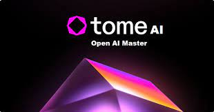
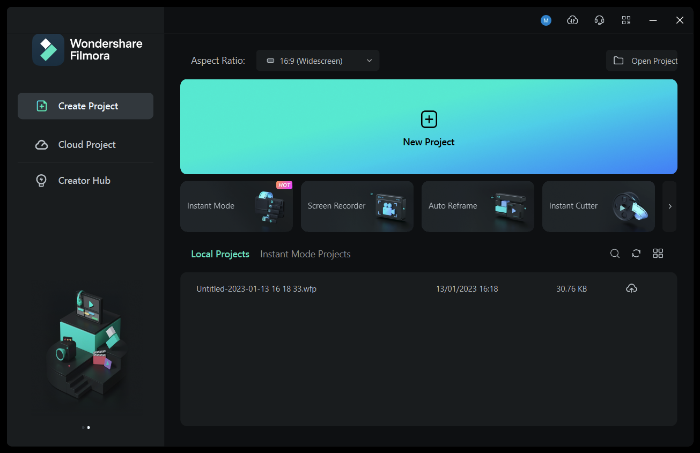

Browse 5+ Best Presentation Tools
TOME AI
Tome AI is an advanced artificial intelligence system developed by AI Search Inc. It is designed to provide comprehensive and accurate
information to users by utilizing a vast database of authoritative and factual sources. With its advanced algorithms and natural
language processing capabilities, Tome AI is able to understand and interpret complex queries, allowing it to deliver highly relevant
and detailed answers. The system constantly updates its knowledge base to ensure that the information it provides is up-to-date and
reliable. Tome AI is a powerful tool that can assist users in finding answers to a wide range of questions across various domains.TOME AI.
PENELOPE AI
 Wonder Share Presentatory is a powerful presentation software that allows users to create engaging and interactive presentations with ease.
With its intuitive interface and extensive features, it has become a popular choice among professionals and students alike.
In this paragraph, we will explore the key features and benefits of Wonder Share Presentatory, and why it stands out from other
presentation software.
WONDERSHARE PRESENTATORY.
REWRITE AI

Gamma AI is a powerful and versatile type of artificial intelligence that has the potential to revolutionize a wide range of industries
and fields. Its ability to perform self-modification and learn from a wide range of data sources makes it one of the most promising
AI models currently available. As research and development in the field of Gamma AI continues to advance, we can expect to see more
and more applications of this technology in the years to come.
GAMMA.
REPHRASER AI

Rephraser AI has a user-friendly interface that allows users to easily input their text and receive instant rephrased suggestions.
The tool employs a combination of rule-based approaches and machine learning models trained on large corpora of text data.
It analyzes the syntactic structure, semantic meaning, and contextual information of the input text to generate accurate and
coherent rephrasings. Rephraser AI can handle various types of sentences, including complex ones with multiple clauses or ambiguous
meanings. It also considers stylistic preferences and can generate rephrasings that match specific writing styles or tones.
The tool provides users with multiple alternative suggestions for each sentence, allowing them to choose the most suitable
option based on their needs. Overall, Rephraser AI is a reliable and efficient tool for anyone looking to improve their writing
by generating high-quality paraphrases.
GPT FOR SLIDES.
DECKTOPUS
Decktopus is an innovative AI-powered platform that revolutionizes the way presentations are created. Using advanced
artificial intelligence algorithms, Decktopus streamlines the process of crafting engaging and visually appealing presentations.
It simplifies tasks such as designing slides, formatting text, and selecting appropriate visuals, allowing users to focus more on
the content itself. With its user-friendly interface and customizable templates, Decktopus empowers individuals and businesses to
create professional presentations effortlessly. Whether you're a student, a professional, or a company executive, Decktopus can help
you deliver compelling and impactful presentations with ease, making it a valuable tool in the world of AI-driven content creation.
DECKTOPUS.